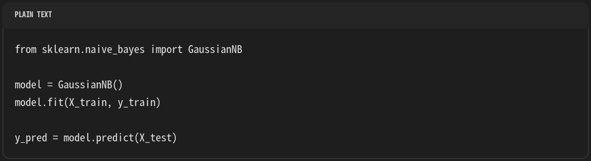
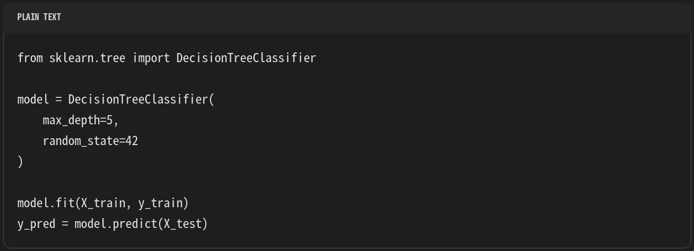
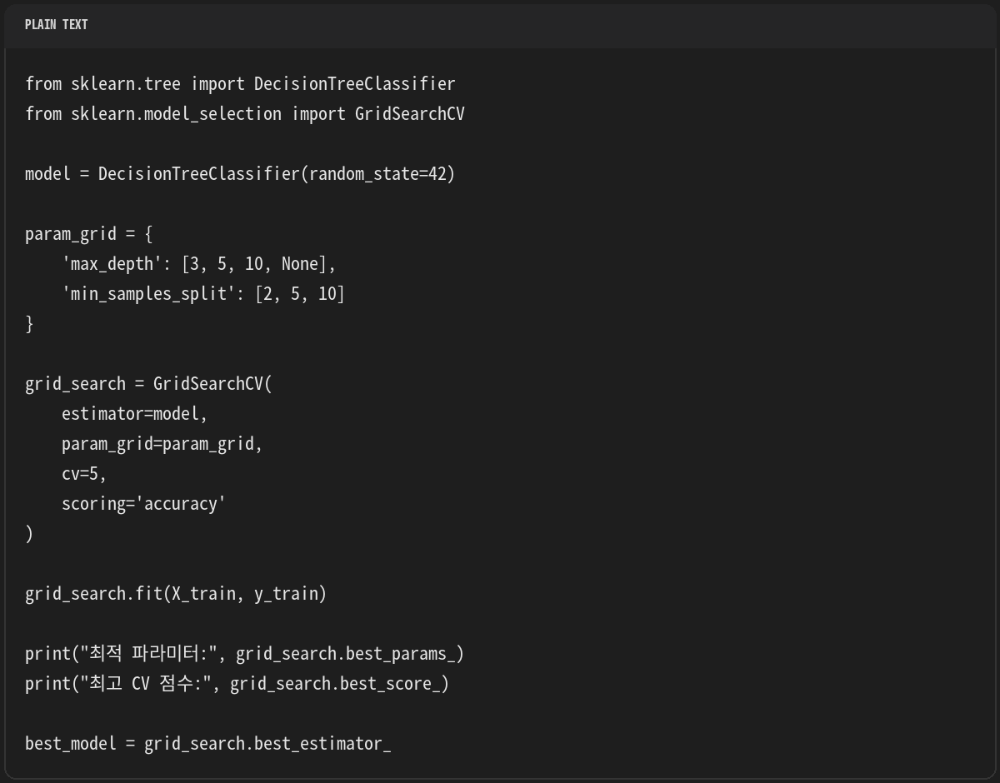
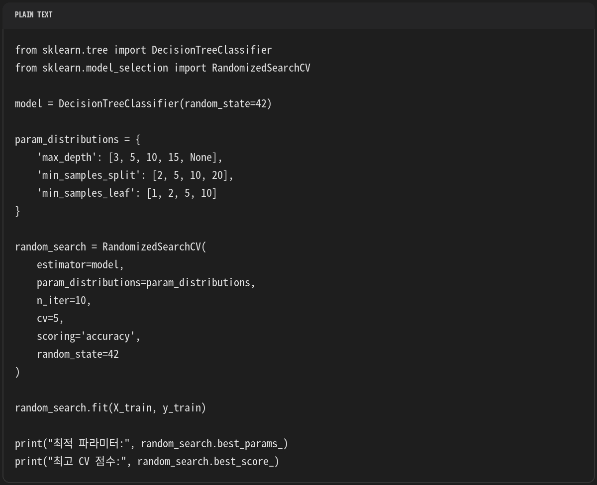
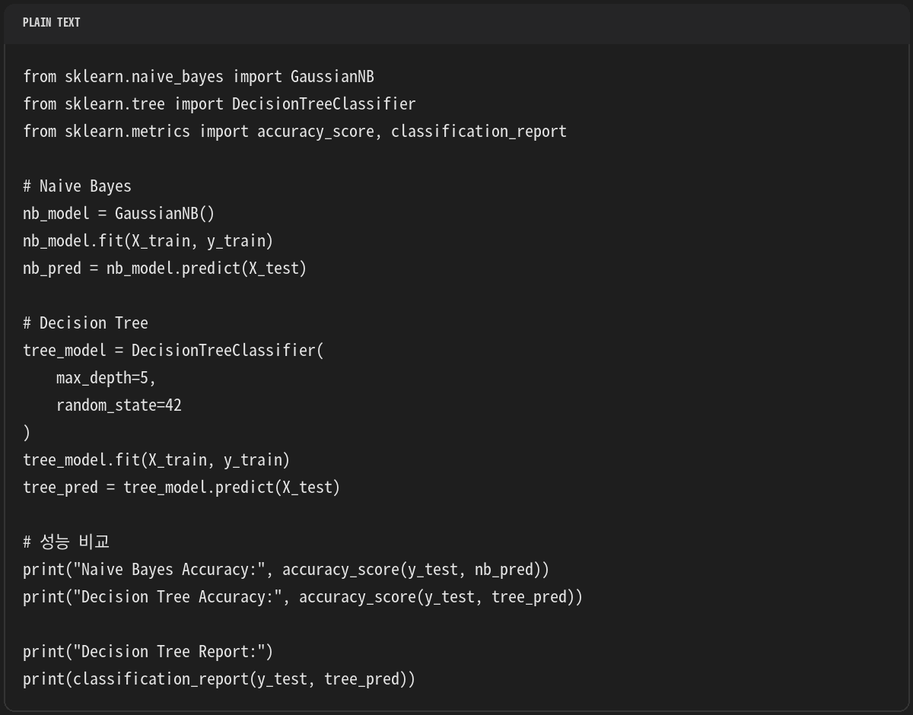

📚 3주차 Python Machine Learning
2026.10.26 Mon ~ 2026.10.30 Fri | Total: 5 days
📕 C. Naive Bayes, Decision Tree (2026.10.28 Wed)
📃 a. Naïve Bayes (나이브 베이즈)
나이브 베이즈(Naive Bayes) 는 베이즈 정리를 기반으로 데이터를 특정 클래스에 속할 확률을 계산하여 분류하는 알고리즘이다.
특성들이 서로 조건부 독립이라고 가정한다는 점이 특징이다. 실제 데이터에서 특성들이 완전히 독립적이지 않더라도 이 가정을 사용해 계산을 단순화한다.
베이즈 정리
P(A|B): B라는 증거가 주어졌을 때 A일 확률P(B|A): A일 때 B라는 증거가 관찰될 확률P(A): 사전 확률P(B): 증거 B가 관찰될 확률
예시
- 이메일의 단어를 분석하여 스팸 여부 분류
- 문서의 주제를 자동으로 분류
- 텍스트 감정 분석의 기초 모델로 활용
scikit-learn의 주요 모델
| 모델 | 특징 | 활용 예시 |
|---|---|---|
GaussianNB | 특성의 분포가 정규분포를 따른다고 가정 | 연속형 데이터 |
MultinomialNB | 특성값이 주로 빈도나 횟수 형태일 때 사용 | 단어 출현 횟수 |
BernoulliNB | 특성이 0 또는 1의 이진 형태일 때 사용 | 단어 출현 여부 |
기본 코드

PLAIN TEXT 코드
장점
- 학습과 예측이 비교적 빠르다.
- 구현이 간단하다.
- 텍스트 분류 등에서 유용하다.
주의점
- 특성 간 조건부 독립 가정이 실제 데이터와 맞지 않을 수 있다.
- 모델별로 적합한 데이터 형태가 다르다.
📃 b. Decision Tree (결정 트리)
결정 트리(Decision Tree) 는 데이터를 여러 조건으로 나누면서 최종 클래스를 예측하는 알고리즘이다.
쉽게 말해, 질문에 답하면서 정답을 찾아가는 의사결정 과정과 비슷하다.
예시: 서버 고장 여부 예측
- CPU 사용률이 90% 이상인가?
- 온도가 80°C 이상인가?
- 과거 오류 기록이 있는가?
- 조건에 따라 정상 또는 고장으로 분류
주요 용어
- Root Node(루트 노드): 트리의 가장 처음 노드
- Decision Node(결정 노드): 조건에 따라 데이터를 나누는 노드
- Leaf Node(리프 노드): 최종 예측 결과를 나타내는 노드
- Depth(깊이): 트리가 얼마나 깊게 분기하는지 나타내는 값
- Overfitting(과적합): 학습 데이터에 지나치게 맞춰져 새로운 데이터에서 성능이 떨어지는 현상
데이터를 나누는 기준
- Gini Impurity(지니 불순도): 한 노드에 서로 다른 클래스가 얼마나 섞여 있는지 측정
- Entropy(엔트로피): 클래스의 불확실성을 측정
- 일반적으로 불순도가 낮아지도록 데이터를 분할한다.
기본 코드

PLAIN TEXT 코드
주요 하이퍼파라미터
| 파라미터 | 의미 |
|---|---|
max_depth | 트리의 최대 깊이 |
min_samples_split | 노드를 분할하는 데 필요한 최소 샘플 수 |
min_samples_leaf | 리프 노드에 필요한 최소 샘플 수 |
criterion | 분할 기준. 예: gini, entropy, log_loss |
장점
- 조건과 예측 과정을 비교적 이해하기 쉽다.
- 특성 간 비선형 관계를 학습할 수 있다.
- 일반적인 결정 트리는 특성 스케일링이 필수는 아니다.
주의점
- 트리가 너무 깊으면 과적합이 발생할 수 있다.
- 데이터가 조금 바뀌어도 트리 구조가 달라질 수 있다.
📃 c. Hyperparameter Tuning (GridSearchCV, RandomizedSearchCV)
하이퍼파라미터(Hyperparameter) 는 모델이 학습을 시작하기 전에 사용자가 설정하는 값이다.
예를 들어, 결정 트리의 최대 깊이인 max_depth나 KNN의 이웃 수인 n_neighbors가 있다.
- Parameter(모델 파라미터): 학습 과정에서 모델이 데이터로부터 학습하는 값
- Hyperparameter(하이퍼파라미터): 사용자가 학습 전에 설정하거나 탐색하는 값
하이퍼파라미터 튜닝(Hyperparameter Tuning) 은 여러 설정을 비교해 성능이 좋은 조합을 찾는 과정이다.
1. GridSearchCV
사용자가 지정한 하이퍼파라미터 조합을 모두 탐색한다.

PLAIN TEXT 코드
위 예제는 max_depth 4개와 min_samples_split 3개를 조합하므로 총 12개 조합을 탐색한다. cv=5는 각 조합을 5개 폴드로 나누어 교차 검증한다는 뜻이다.
2. RandomizedSearchCV
지정한 후보 범위에서 일정 횟수만큼 조합을 무작위로 탐색한다.

PLAIN TEXT 코드
n_iter=10은 10개의 하이퍼파라미터 조합을 탐색한다는 뜻이다.
두 방법의 차이
| 구분 | GridSearchCV | RandomizedSearchCV |
|---|---|---|
| 탐색 방식 | 지정한 모든 조합 | 지정한 횟수만큼 무작위 조합 |
| 계산 비용 | 조합이 많으면 커짐 | 탐색 횟수로 조절 가능 |
| 적합한 상황 | 후보 조합이 적을 때 | 후보가 많고 탐색 범위가 넓을 때 |
교차 검증(Cross-Validation)
데이터를 여러 부분으로 나누어 학습과 검증을 반복하는 방법이다.
예를 들어 cv=5이면 데이터를 5개 폴드로 나누고, 매번 1개 폴드를 검증에 사용하고 나머지 4개를 학습에 사용한다. 이 과정을 반복해 평균 성능을 구한다.
주의사항
- 하이퍼파라미터 선택에는 학습 데이터 내부의 교차 검증을 사용한다.
- 최종 성능 평가는 튜닝에 사용하지 않은 테스트 데이터로 수행한다.
- 테스트 데이터 성능을 반복해서 확인하며 모델을 조정하면 테스트 데이터에 과도하게 맞출 위험이 있다.
best_score_는 교차 검증 점수이며, 최종 테스트 점수와 같지는 않다.
📃 d. Project (프로젝트)
나이브 베이즈와 결정 트리를 사용해 분류 모델을 만들고, 하이퍼파라미터 튜닝으로 성능을 비교한다.
기본 진행 순서
- 데이터 불러오기 및 구조 확인
- 결측치와 이상치 처리
- 입력 특성
X와 타깃y분리 - 학습 데이터와 테스트 데이터 분리
- 모델 생성 및 학습
- 예측 및 분류 평가 지표 확인
GridSearchCV또는RandomizedSearchCV로 하이퍼파라미터 튜닝- 최적 모델을 테스트 데이터로 평가
- 튜닝 전후 성능 비교
모델별 기본 코드

PLAIN TEXT 코드
※ X_train, X_test, y_train, y_test는 미리 분리한 데이터다. 클래스 불균형이 있다면 Accuracy뿐 아니라 Precision, Recall, F1-score도 함께 비교한다.
✅ 핵심 요약
- Naive Bayes: 베이즈 정리와 조건부 독립 가정을 이용해 확률 기반으로 분류한다.
- Decision Tree: 조건에 따라 데이터를 분할해 예측하며, 해석하기 쉽지만 과적합에 주의해야 한다.
- Hyperparameter Tuning: 모델 설정을 바꿔 성능이 좋은 조합을 찾는다.
- GridSearchCV: 지정한 모든 조합을 탐색한다.
- RandomizedSearchCV: 지정한 횟수만큼 조합을 무작위로 탐색한다.
- Cross-Validation: 데이터를 여러 폴드로 나누어 모델의 성능을 평가한다.
- 최종 성능은 튜닝에 사용하지 않은 테스트 데이터로 평가한다.
🎯 학습 목표: 나이브 베이즈와 결정 트리의 차이를 이해하고, 교차 검증과 하이퍼파라미터 튜닝으로 분류 모델의 성능을 개선할 수 있다.